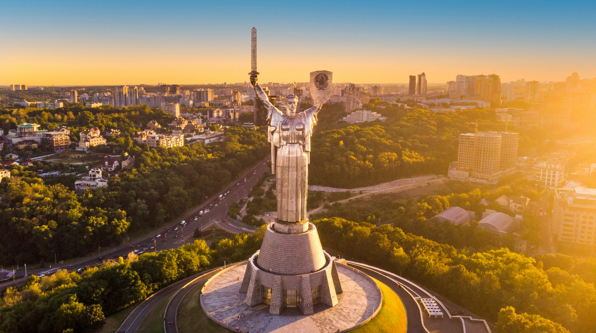
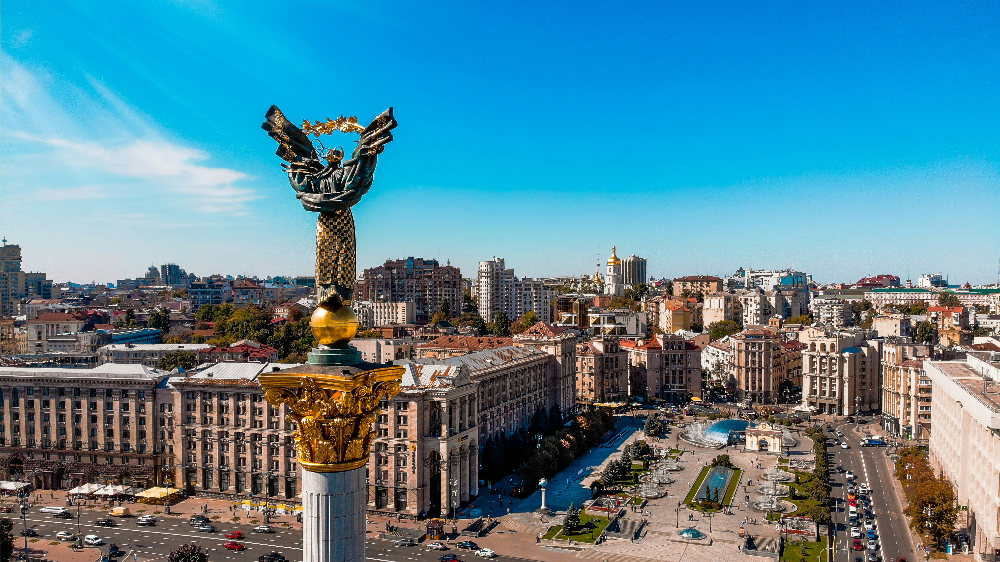

Україна — це найбільша держава, яка повністю розташована в Європі, відома своєю багатовіковою історією, унікальною культурою та незламним духом свого народу.
Пилип Орлик у 1710 році створив одну з перших у світі конституцій, яка визначила поділ влади на три гілки задовго до багатьох європейських країн.
Географічний центр європейського континенту розташований в Україні, неподалік від міста Рахів на Закарпатті.
Станція "Арсенальна" в Києві є найглибшою у світі. Вона опускається під землю на 105,5 метрів.
Всесвітньо відома різдвяна пісня Carol of the Bells — це адаптація української народної пісні "Щедрик" в обробці композитора Миколи Леонтовича.


У селі Межиріч (Рівненська область) археологи знайшли унікальний малюнок на кістці мамонта, якому близько 15 000 років. Вчені довели, що це найдавніша з відомих людству топографічних мап. На ній первісні мисливці зобразили план свого поселення з позначенням жител та річки.
В Україні розташована одна з найбільших пустель Європи — Олешківські піски (Херсонська область). Вона займає площу понад 160 квадратних кілометрів. Влітку пісок тут може прогріватися до +75 °C, а навколо пустелі висаджено найбільший у світі штучний ліс, який стримує поширення піщаних дюн.
У селищі Клевань (Рівненська область) розташоване одне з найромантичніших місць планети — «Тунель кохання». Це 4-кілометровий відрізок залізничної колії, навколо якого дерева та кущі утворили ідеальну живу арку. Сюди приїздять туристи з усього світу, а японський режисер навіть зняв про цей тунель повнометражний фільм.
Українська трембіта офіційно внесена до Книги рекордів Гіннеса як найдовший духовий інструмент у світі. Її довжина може сягати від 3 до 4 метрів, а виготовляють її виключно з «громовиці» — дерева, в яке влучила блискавка. Звук трембіти чути на відстані понад 10 кілометрів.
В Україні зосереджено близько однієї чверті (25%) усіх світових запасів найродючішого ґрунту — чорнозему. Через це українська земля здатна прогодувати сотні мільйонів людей. Під час Другої світової війни німці навіть вивозили український чорнозем потягами в Німеччину.10. Оптимістичний рекорд під зе